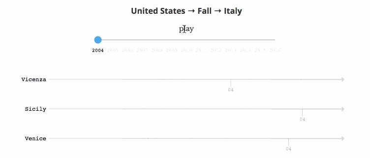
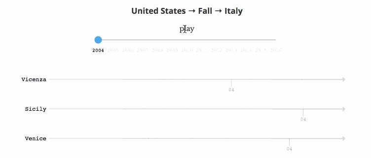
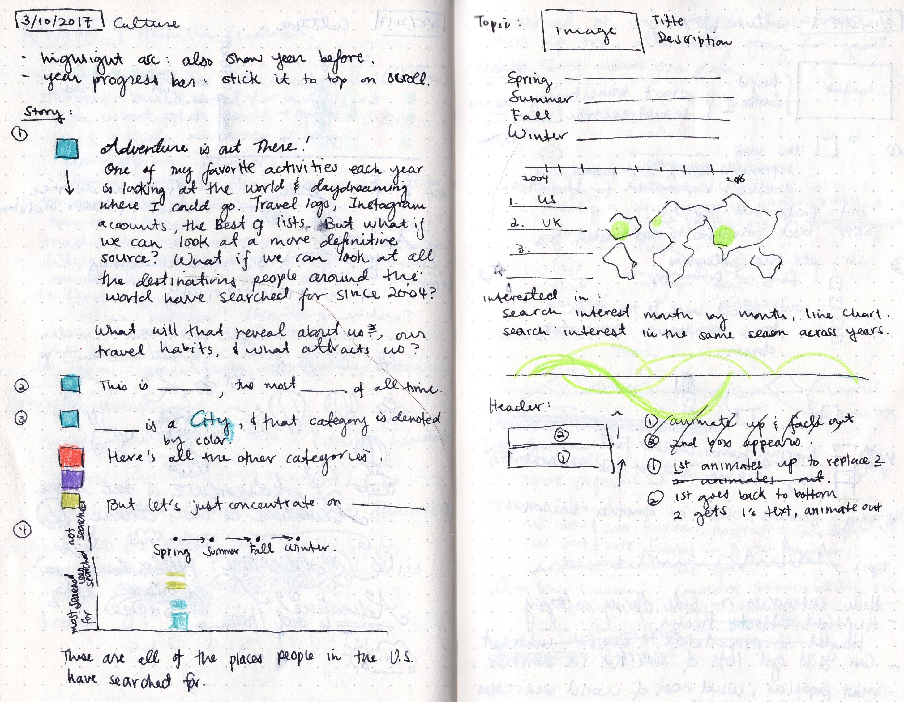
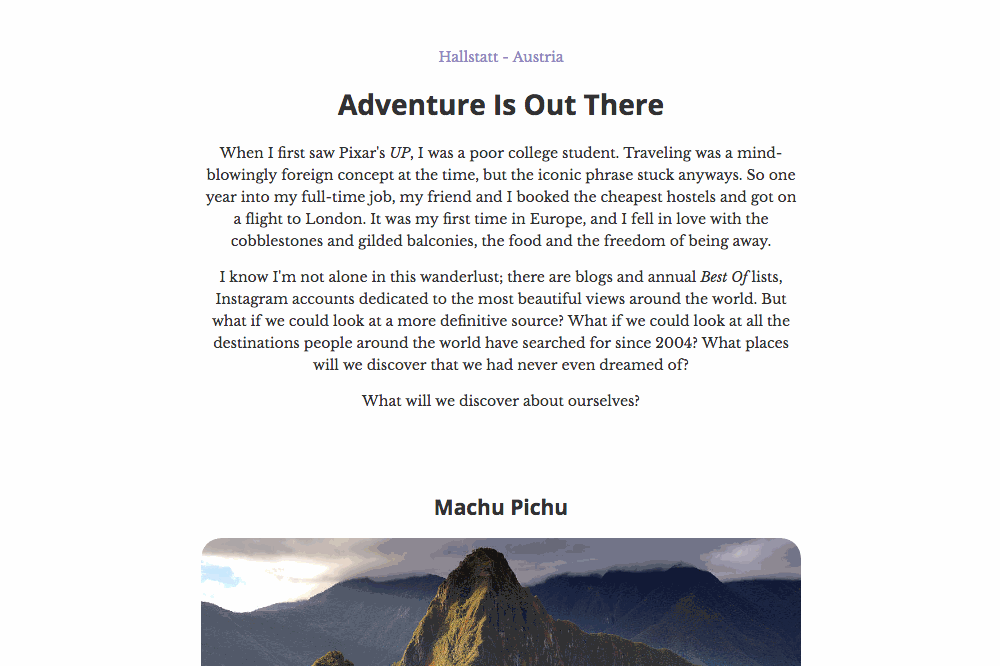
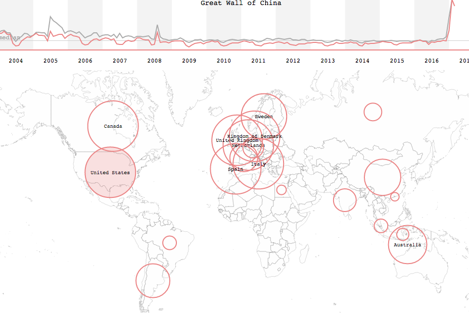
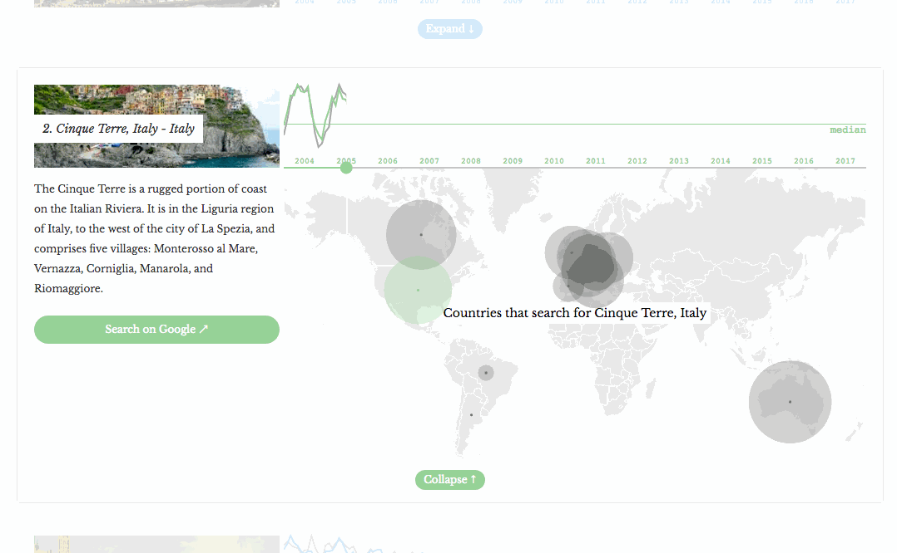
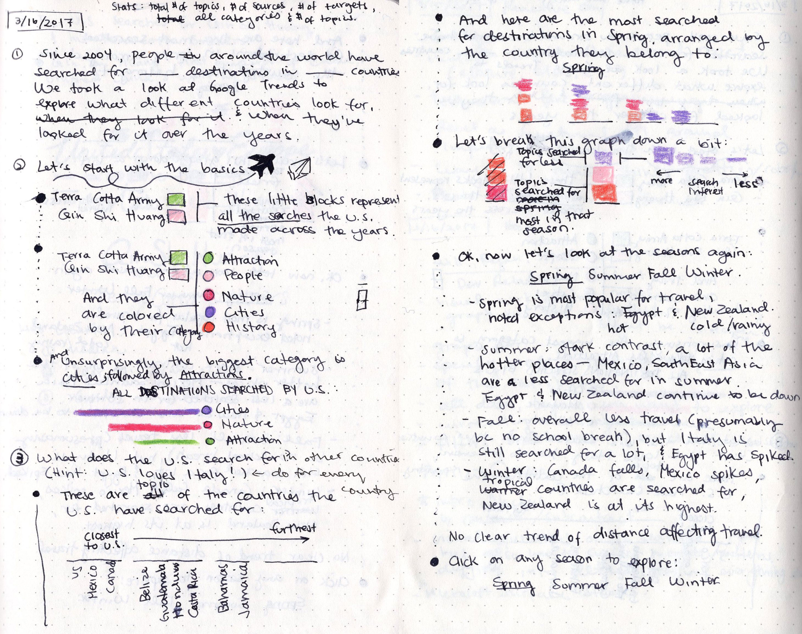
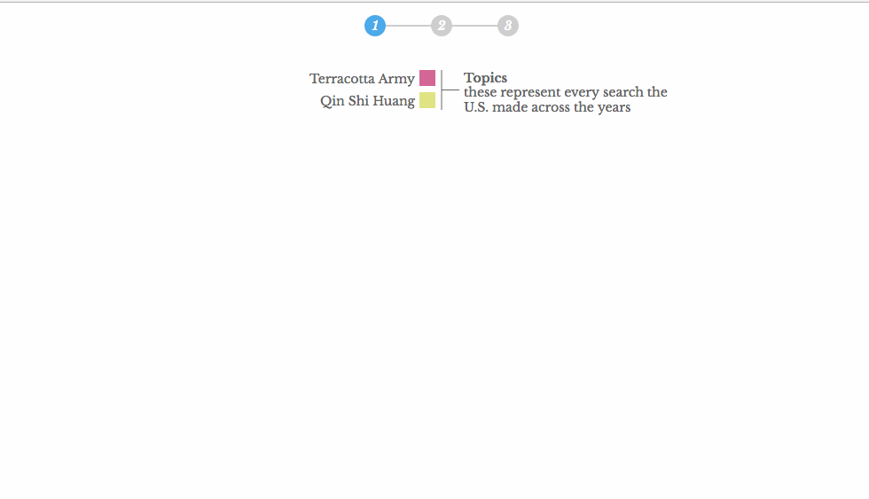
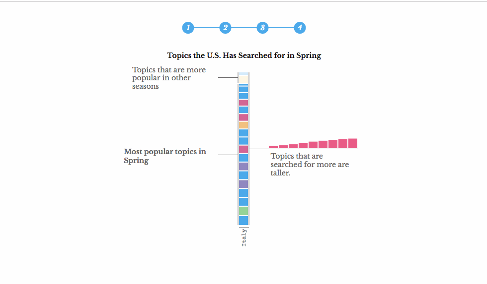

When Nadieh and I got the email from Alberto and Simon to work with Google News Lab, I was ecstatic and beyond intimidated. Afterall, it was Google, it was Simon Rogers and Alberto Cairo, and they had search data back to 2004. They had already published projects from Accurat and Truth & Beauty, and I wasn't sure if I could live up to them.
But I was determined to try my best.
Nadieh and I explored Google Trends and came up with several proposals, and Simon ended up choosing our Culture proposal. Nadieh was to look into language, the most common words a country searched for to translate into English. I wanted to look into travel, at what places a country searched for in another.
Since Simon preferred having the data we displayed live instead of being a snapshot in time, I subcontracted my friend Charles to build a web app with a database to serve up the data we queried from Google Trends. (Let me repeat, I subcontracted someone. For the first time. I feel so adult.) Since I usually work by myself on my data sketches, it was a great feeling to have another person work on this project with me; not only did he get and clean all the data so I didn't have to, he was great to bounce ideas off of since he was so intimately familiar with the data.
 When I started, I wanted to know given a country, which countries were searching for that country the most. I wanted to know, were they looking for cities in that country? Museums? Specific landmarks? And as I started digging into the data with Google Trend's Explore function, I also started to wonder if countries looked for places geographically closer to them; this thought came to mind when I saw that Australia when looking at the U.S. searched primarily for places on the West Coast.
When I started, I wanted to know given a country, which countries were searching for that country the most. I wanted to know, were they looking for cities in that country? Museums? Specific landmarks? And as I started digging into the data with Google Trend's Explore function, I also started to wonder if countries looked for places geographically closer to them; this thought came to mind when I saw that Australia when looking at the U.S. searched primarily for places on the West Coast.
The way Google Trends works, we can put in a set of search terms (up to five) and get back their search interest, all the originating regions, as well as related and top topics over a specific time period. We can also specify a specific originating region, and a category to filter by.
 To get the data we needed, Jennifer Lee at the News Lab suggested we search for every country (with Google's list of country id's) filtered by Tourist Destinations and for all time. Since Google Trends returns the search interest back to us as a relative value out of 100, she also suggested that we go through all the countries but leave one of the countries in as a baseline. That way, we can accurately get the top 20 countries by travel search interest.
To get the data we needed, Jennifer Lee at the News Lab suggested we search for every country (with Google's list of country id's) filtered by Tourist Destinations and for all time. Since Google Trends returns the search interest back to us as a relative value out of 100, she also suggested that we go through all the countries but leave one of the countries in as a baseline. That way, we can accurately get the top 20 countries by travel search interest.
After getting the top 20 countries, we got the top regions that searched the most for each of those countries every quarter starting from 2004, and then the top topics those regions searched for. It sounded reasonable when we first came up with the queries, but when we got back the data, it was overwhelmingly vast. I meandered for weeks trying to make sense of the data, creating visuals to dig through the data, trying to figure out if there was an interesting story buried in there. At one point, we decided to get travel topics for all the countries around the world and not just the top 20, and we ended up with thousands of topics with hundreds of categories.
In order to make sense of the data beyond simple frequencies of countries searching for each other, we needed a way to categorize the data. We wanted categories that are specific enough to be meaningful but broad enough so that the viewer isn’t confused by the sheer number of categories. To determine which one of our 8 categories each topic belongs to, Charles pulled the topic details off of Google's Knowledge Graph Search, which includes images, descriptions, and an array of types for the topic. For each topic, its types in the Knowledge Graph correspond to a list of “tags” picked out of a predefined set. We immediately settled on cities, people, and nature being three of the categories. The remainder were more difficult to define -- among the types given by the Knowledge Graph, we wanted to pick the type of the proper specificity -- not too broad like “Thing” or “Place”, but also not too narrow like “LodgingBusiness” or “MovieTheater”. Charles produced a mapping of Knowledge Graph types to our chosen categories; for the 45 topics that either fell into multiple categories or no category, we manually assigned the category.
For my sketch and code sections, I really meandered trying to figure out my visuals and narrative. I started by exploring for Brazil (the top searched country for travel) which countries had searched for it in a given year, defaulting to 2016:
 And this was really cool because I could see that the countries closer to Brazil did indeed search for it more, but I also wanted to see at a glance all the searches across the years. I thought up these pie charts placed above the centroid of each country, with the radius being the amount of search interest, and the colors being the years.
And this was really cool because I could see that the countries closer to Brazil did indeed search for it more, but I also wanted to see at a glance all the searches across the years. I thought up these pie charts placed above the centroid of each country, with the radius being the amount of search interest, and the colors being the years.
 I liked that it showed me that some countries were searching for Brazil since 2004, but others only started searching recently - this was interesting, but potentially misleading; we couldn't tell from our data if those countries only started becoming interested recently, or only started using Google recently. Alberto - who was responsible for our art direction - also adviced me against the bubble chart/pie chart hybrid, since it could potentially confuse readers.
I liked that it showed me that some countries were searching for Brazil since 2004, but others only started searching recently - this was interesting, but potentially misleading; we couldn't tell from our data if those countries only started becoming interested recently, or only started using Google recently. Alberto - who was responsible for our art direction - also adviced me against the bubble chart/pie chart hybrid, since it could potentially confuse readers.
So I went back to the drawing board. This was around when I took my first stab at categorizing the topics (Charles did the more sophisticated version later on), and I wondered if instead of focusing on just one country at a time, I could show all the countries and their topics from the get go. The idea was that each topic was a block colored by their category and grouped by their year, in a circle around an outline of the country it belonged to:

 Though this version was certainly pretty, the circle format made it hard to compare across the years and across the countries (though it did give a good at-a-glance summary of the countries), and Alberto urged me to try a normal bar graph instead.
Though this version was certainly pretty, the circle format made it hard to compare across the years and across the countries (though it did give a good at-a-glance summary of the countries), and Alberto urged me to try a normal bar graph instead.
And since I was going to turn it into a bar chart, I thought maybe I could play around with the length of the blocks (which I couldn't before). I wondered if on top of category and year, if I could also encode the popularity of a topic as its width. This was an unfortunate mistake, and I call this piece The Plunger:
 I did like my idea of trying to show the popularity of a topic, so this time around, I tried to do it with the radius of the circle. So each circle represented the topic searched by an originating region, and the more overlap there was for a set of circles (and thus darker) the more originating regions that had searched for that topic for that country.
I did like my idea of trying to show the popularity of a topic, so this time around, I tried to do it with the radius of the circle. So each circle represented the topic searched by an originating region, and the more overlap there was for a set of circles (and thus darker) the more originating regions that had searched for that topic for that country.
 I liked this much more than all my previous attempts, and iterated on it a bit more, including a section on the right that expanded all the topics in a year and lined them up by originating region. The originating regions were positioned by their proximity to the country being searched.
I liked this much more than all my previous attempts, and iterated on it a bit more, including a section on the right that expanded all the topics in a year and lined them up by originating region. The originating regions were positioned by their proximity to the country being searched.

 The expanded topic view didn't give as much insight as I was hoping for (especially since the x-axis was arbitrary), so I tried a different approach of showing just the selected topic over the years. To try to fix the overlap of the originating region names, I spaced them out evenly and also experimented with a heatmap to see if it would look cleaner.
The expanded topic view didn't give as much insight as I was hoping for (especially since the x-axis was arbitrary), so I tried a different approach of showing just the selected topic over the years. To try to fix the overlap of the originating region names, I spaced them out evenly and also experimented with a heatmap to see if it would look cleaner.

 I liked this last version enough, and got to brainstorming how I wanted to introduce the visuals and provide a key to reading them. I decided I would find the most searched for topic (Pattaya, Thailand) and write a story around it that would also introduce the bubble graph and heatmap. After digging through the two visualizations for any interesting insight into Pattaya and banging my head on the desk for an afternoon, I had to face the truth my friend was pointing out: perhaps I should rethink my visualizations, because though they were pretty enough, digging through them wasn't getting me anything useful.
I liked this last version enough, and got to brainstorming how I wanted to introduce the visuals and provide a key to reading them. I decided I would find the most searched for topic (Pattaya, Thailand) and write a story around it that would also introduce the bubble graph and heatmap. After digging through the two visualizations for any interesting insight into Pattaya and banging my head on the desk for an afternoon, I had to face the truth my friend was pointing out: perhaps I should rethink my visualizations, because though they were pretty enough, digging through them wasn't getting me anything useful.
So I went back to brainstorming and asking myself what it was that I wanted to learn about the data. I remembered in my digging for Pattaya the seasonal nature of some of these topics' search interests, and wondered if there was something interesting there - were certain continents searched for more in summer as opposed to winter or vice versa?
 Here, the top section is Spring, and the bottom is Summer. Everytime there is a tall set of blue blocks, it indicates the start of a continent, and the continents are ordered by closest to furthest from U.S. Each block is a topic the U.S. has searched for. And yet again the visual didn't go the way I was hoping for; it turns out for each continent, the number of topics searched for are always the same across the seasons.
Here, the top section is Spring, and the bottom is Summer. Everytime there is a tall set of blue blocks, it indicates the start of a continent, and the continents are ordered by closest to furthest from U.S. Each block is a topic the U.S. has searched for. And yet again the visual didn't go the way I was hoping for; it turns out for each continent, the number of topics searched for are always the same across the seasons.
 I was so bummed that I left the cafe I was working at, but on my drive home realized that I should try to size the height of each topic by their search interest. This actually gave interesting results for which I was really excited:
I was so bummed that I left the cafe I was working at, but on my drive home realized that I should try to size the height of each topic by their search interest. This actually gave interesting results for which I was really excited:

 For each topic, I was curious about the rise and fall of of it across the years.
For each topic, I was curious about the rise and fall of of it across the years.

 
The idea of it was that the x-axis was the search value out of 100, and each circle was a year. An arc above meant that searches had increased across a year, whereas below indicated a decrease across a year. I learned quite a bit from this visual: for example, a lot of topics actually peaked in 2004 and have been declining since, with a lot of them dipping the most between 2008 and 2011 (the years of the financial market crashes). But as useful as those insights were, I had to admit that it took a lot of effort to get those insights from the visualization.

The idea of it was that the x-axis was the search value out of 100, and each circle was a year. An arc above meant that searches had increased across a year, whereas below indicated a decrease across a year. I learned quite a bit from this visual: for example, a lot of topics actually peaked in 2004 and have been declining since, with a lot of them dipping the most between 2008 and 2011 (the years of the financial market crashes). But as useful as those insights were, I had to admit that it took a lot of effort to get those insights from the visualization.
I put aside the visualizations for the topic details for a bit to work on the story. In mid-February, I had taken a Web Animation Workshop with Sarah Drasner and Val Head, where I learned the basics of how to animate with Greensock. With that knowledge, I wanted to create "scenes" that explained the visuals in detail, and my first pass was with scrollytelling. However, I was unsatisfied with how much vertical space I was taking to show as simple of a concept as topics and categories.   I went back to working on the topic details, and went with Alberto's suggestion of a line chart, as well as the world map with bubbles over each originating region:   With these views, I was able to explore and find an interesting story about the seasonality between Qin Shi Huang and his Terracotta soldiers, and also the stories to introduce topics, categories, and my originating regions visualization. I was especially interested in figuring out how to introduce those visualizations in a space-efficient way, and remembered the discussion between scrollytelling and stoppers a while back. I decided to try animating with the stoppers, and I like the way it turned out; with Greensock I was able to have smooth transitions between each step and it's probably the best looking set of animations I've ever made.   
It's been quite an arduous journey, where I changed my visualizations almost every week for a month (and I felt super bad every time Simon and Alberto gave feedback and I came back with a completely different visual the next week), didn't know what to do with my data, and didn't know if I was going to find anything interesting to tell. I think a lot of the flip-flop really came from two things: the vastness of the data (and my lack of knowledge on how to glean through them efficiently for insights), and my not sticking to one question all the way through. I jumped around asking a bunch of different questions, but ended up with the same questions as the beginning: what does a country search about other countries, and what do other countries search about it?
Despite all of that, I'm glad I was able to end up with something I can be proud of. I like the stories I found, and I like the exploration section I ended up with (though I wonder if I've used too many colors). And I'm really grateful to Simon and Alberto for giving me this opportunity and for their guidance, and of course for Nadieh's constant encouragement.
{kind=link}
{kind=link}
{kind=link}
{kind=link}
{kind=link}
{kind=link}
{kind=link}
{kind=link}
{kind=link}